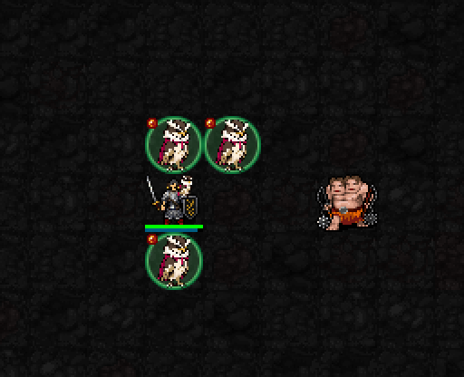

간모 3마리 집중 공격 · 실제 게임
기존 B안과 두 발 동시 공격 모션을 유지했습니다. 한 행동 안에서 참여 간모의 공격 장면이 차례로 재생됩니다.

현재 이동은 인접 칸으로 즉시 재배치됩니다. 이 GIF는 실제 이동 전 상태·각 간모의 공격·최종 상태를 캡처한 것으로, 중간 비행 경로 애니메이션은 포함하지 않습니다.
적 하나를 지정 → 주변 간모들이 적의 인접 칸으로 재배치 → 각자 즉시 공격
해금: 신앙 ★★★75 · 최소 기도술 제한 없음
비용: MP3 · 신앙3 · 행동 1턴
대상 지정 거리: 플레이어에게서 5칸 · 참여하는 간모는 적에게서 4칸 이내
재사용: 시전 시작 기준 5턴(시전 1턴이 지난 직후에는 4턴 남음)
기존 B안과 두 발 동시 공격 모션을 유지했습니다. 한 행동 안에서 참여 간모의 공격 장면이 차례로 재생됩니다.

현재 이동은 인접 칸으로 즉시 재배치됩니다. 이 GIF는 실제 이동 전 상태·각 간모의 공격·최종 상태를 캡처한 것으로, 중간 비행 경로 애니메이션은 포함하지 않습니다.
I = 기도술. 예시는 I=12.
| 항목 | 현재 구현 |
|---|---|
| 참여 조건 | 적과 4칸 이내·가려지지 않은 경로·도착 가능한 인접 빈 칸 |
| 즉시 공격 | 참여 간모마다 명중 판정 후 1회 |
| 공격 굴림 | 1d(5+⌊I/3⌋)+3+⌊I/6⌋ I=12: 1d9+5 |
| 명중 기준값 | 21+I → 33 |
| 시야 방해 패시브 | 지난 3턴 내 적중한 서로 다른 간모마다, 적의 플레이어 대상 명중 -2 · 최대 -6 |
| 공격 이후 | 지휘를 받은 간모는 즉시 일반 행동을 한 번 더 하지 않도록 행동 간격 적용 |
간모 소환 자체는 1성 권능으로 먼저 사용합니다. 새 간모를 공짜로 추가 소환하는 권능은 아닙니다.
이 캡처의 실제 총 피해: 13. 한 번의 테스트 결과이며 고정 피해 수치가 아닙니다.
전투 수치는 유지하고 3성 직접 타격에도 기존 공격 모션을 연결했습니다. 전체 22신의 기존 시각 작업을 완료한 뒤, 중간 성급 패시브와 최종 권능 배치를 별도로 재설계합니다.